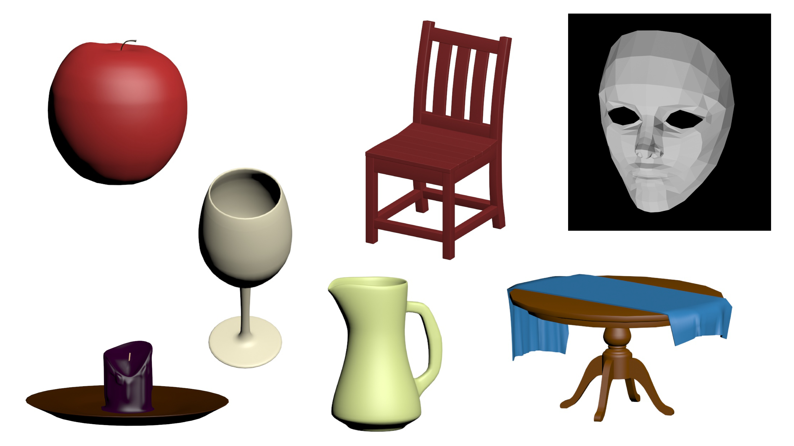

meet the artist

Hello! I'm Ranz!! I'm currently majoring in Digital Media Art at San Jose State University. I was born in the Philippines and moved to San Jose, California to where I grew up in. I love to express my creativity through art, digitally and traditionally. I am really passionate about the skills and knowledge that I learn all throughout my life experiences and I try to grasp those valuable key moments in the direction of relating it back to my creative mind. For that reason, I am a very goal-driven individual who wants to aim to be a finer artist.

portfolio
 With the idea of medium and message incorporated through art, I was able to successfully implement it through a sculptural piece that spoke to me about how Halloween statistically had become a room for parents to be paranoid and a dwindling holiday activity because of how
dangerous this particular time of the year can be.
With the idea of medium and message incorporated through art, I was able to successfully implement it through a sculptural piece that spoke to me about how Halloween statistically had become a room for parents to be paranoid and a dwindling holiday activity because of how
dangerous this particular time of the year can be.
I was experimenting with the mediums I used; I cast my hands using plaster and alginate and I used found objects such as strings, razor blades, honey, cellophane, and warhead candies. With the mediums I applied to the piece, I was able to present a message through each and every object presented.
Meaning: The white plaster represents innocence, while the strings with razor blade covered with honey represent the sweetness oozing down from danger. The candy, wrapped in a suspicious manner using colored cellophane; once people take a bite of the candy, they will get a taste of sourness.
The idea of a basic word and making it alive is what I conveyed in this art piece. I was able to express what the word meant to me and maybe for others. I wanted to look like it had been breathing organically to give discomfort to the audience that is viewing the work. At that time, I was feeling overwhelmed and full of stress because of life and school, in which it felt like the stress was eating my skin alive, creating these branched out holes.
Medium used: styrofoam, toilet paper, Elmer's glue, paint, and slime.
A short film that conveyed my deep inner-self of change and confusion. I was exploring different types of loops and time-lapses to reach out to the audience in a different, but yet meaningful way.
 The use of combining images to explore and get familiarized with Adobe Photoshop was able to assist me in meshing two memes which are: tide pods challenge and Thanos edits. I masked Thanos's face to the front logo of the tide pods to make it look like it is a poster advertisement of an actual Thanos Tide Pods. I also imported a google image of a child wearing a spiderman costume that I eventually edited to make it look like he ate a Thanos tide pod and he turns into dust.
The use of combining images to explore and get familiarized with Adobe Photoshop was able to assist me in meshing two memes which are: tide pods challenge and Thanos edits. I masked Thanos's face to the front logo of the tide pods to make it look like it is a poster advertisement of an actual Thanos Tide Pods. I also imported a google image of a child wearing a spiderman costume that I eventually edited to make it look like he ate a Thanos tide pod and he turns into dust.
The process of loops with variations on Adobe After Effects has helped me portray the quirky creative side of my work. I mostly enjoyed this part of the process because it allowed me to have space for creative freedom rather than a strict rule to follow.

This piece of work is an activist art piece that was made to make people, especially boba lovers, more aware of what is going on in our environment. The idea of this piece was taken out of my own personal experience of visiting a well-known beach called Davenport Beach. I was shocked to see with my own eyes that there was leftover trash from a party. There were plastic bottles, alcohol cans, boba straws and cups, food wastes and etc close to the shoreline to where the water will swallow the wastes. The feeling of anger rushed through me as I reflect on what our society has become and what we are actually doing to our fragile planet.
I first drew a turtle digitally and turned it into stickers so I could stick it into plastic straws inside milk tea restaurants. This piece is mostly targeted to boba drinkers that are still using plastic straws.
click here to view
I was using the idea of net art as a way to communicate my self-portrait through a different style (an interactive digital platform) where people can click through hyperlinked texts and images in a non-linear manner. The site reminds me of a sense of continuity, it takes the viewer to many different pages with different images, videos, and gifs that show who I am as a person. This helped me explore my skills and knowledge of HTML coding, Adobe Dreamweaver, Cyberduck and, Github.
This piece was my first time using Processing to experiment with coding lines, shapes, and colors. This piece is a cartoon self-portrait of myself. When you drag the mouse cursor into the composition it reveals my self in cartoon style and the cursor changes into angel wings. The angel wings represent my gentle and caring side, but when you press on the mouse it changes to the other side of me where I am more hard-headed and stubborn; the mouse cursor also changes to devil horns. My intent behind this piece is to show the viewer that everyone has two sides to them; the two sides which are the good (angel) and the bad (devil).

click to view PDF (filesize 6.5 MB)
This was my first exploration of 3Ds Max. This software enabled me to make 3D models out of shapes that I could change its vertices, polygons, and edges. With making everyday things in a 3D software, I had to look up reference images to successfully create each individual object.